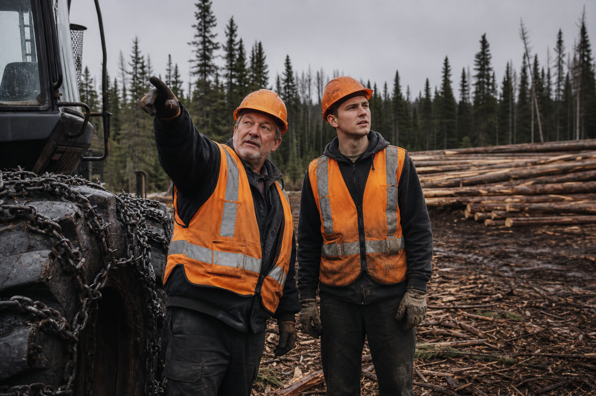

The job nobody counts
There is one job nobody counts, and it may be the most expensive one of the week.
Somebody heads out on foot across the block, usually the most experienced person on the crew, the one who can read terrain. He walks. He looks at where it climbs, where it is soft, where the stream runs. He comes back three or four hours later with a plan in his head and two or three lines on a folded map. And only then can the block be started.
Nobody bills that half morning to anybody. It disappears into the cost of the job. But in an industry that is short of people all year long, sending your best employee walking for half a day to make a decision the terrain has already determined is a strange way to use somebody who was hard to hire.
That is exactly what the partnership between G.A. Logix and TimberTrail solves.
What it is, in one sentence
TimberTrail is a skidding trail computation engine, developed in Sweden, that G.A. Logix has integrated directly into its field applications. The operator opens ForestLogix on the cab tablet, or MobileLogix on a phone, places the log piles on the map, adjusts three settings, presses Analyze, and the proposed trails appear.
No separate tool to open. No contract to sign with another vendor. It is inside ForestLogix and inside MobileLogix, on the same map as your sites, your tracks and your alerts. On the cab tablet when you are in the machine, on your phone when you are on foot in the block.

The six steps, exactly as they appear in the application
The product's built-in help describes the flow in six steps. We repeat them here because they show something important: this is not a black box that hands you a trail and expects you to take it.
- Place the log piles. You tap the map where you want a pile. Hold to drag it, double-tap to delete it. You decide where the wood comes out.
- Trace the existing trails (optional). If there are already skidding trails on this sector, you trace them on the map, point by point. The computation accounts for them instead of starting from nothing.
- Mark the mandatory passages (optional). There is a bridge, a crossing, one exact spot the trail has to go through, and you are the only one who knows it. You mark it on the map. That is where your knowledge of the sector enters the tool.
- Adjust the parameters. Three settings, each with four positions, from the lowest to the highest. More on that in a moment, it is the heart of the matter.
- Run the analysis. You press Analyze. The proposed trails appear on the map, in colour.
- Apply the results. If it suits you, press Apply. If not, change a setting and run it again. That takes seconds, not another half day on foot.
The three settings, and what they mean outside
This is the part a forestry person understands immediately, because these are exactly the three questions he asks himself while walking.
| The setting | What the product help says | What it means on the ground |
|---|---|---|
| Slope Cost | "Set to High to avoid steep slopes" | You accept a detour rather than making the machine strain up a grade |
| Water Cost | "Set to High to avoid waterways" | The computation routes around water instead of proposing a crossing |
| Outside Factor | "Set to High to stay within your sector" | The trail will not wander onto the neighbour's land to save two hundred metres |
Each one has four positions: Ignore, Low, Normal, High. It is not a switch, it is a dial. On dry ground in winter you can lower Water Cost. During spring breakup you raise it.
There is also a warning setting, which determines the risk level at which the computation flags a difficulty for you.
Green and yellow: how to read what the tool proposes
This is where TimberTrail separates itself from a simple line drawing tool. The trails do not all display the same way:
- Green: good trail, favourable terrain.
- Yellow: risk zone, because of slope or water.
In other words, the tool does not just hand you an answer, it tells you where it is less comfortable. A yellow trail is not an error, it is a place where somebody should go look, or where the operator should slow down. For a foreman sending a less experienced employee onto a sector he does not know, that information is worth a lot.
And in the cab, on the map, the operator also has a command that directs him to the nearest log pile. No need to remember which one was where.
Why a Swedish algorithm
We could have tried to code this ourselves in Plessisville. We did not, and we own that.
Skidding trail computation is a problem the Scandinavians have worked on for a long time, with a volume of mechanized harvesting and a body of forestry research that has no equivalent here. Rather than build a weaker version, G.A. Logix partnered with TimberTrail and integrated their engine into ForestLogix.
For you, none of that changes the usage. You do not buy TimberTrail separately, you sign nothing with them, you do not manage a second licence. It is a function of your G.A. Logix applications, on your tablet and on your phone.
What it does change is what you can answer when somebody challenges your skidding plan. The trail was not decided by eye from a pickup truck: it was computed, with criteria you can show on screen.
The knowledge that no longer leaves with the truck
There is one aspect of this tool that gets talked about less, and that worries a lot of the owners we meet.
In almost every forestry company, there is one person who knows. Thirty years in the trade, knows every sector, can look at a block and say where to go. That knowledge is written down nowhere. The day that person retires, it leaves with them.
TimberTrail does not replace that person, and we should be clear about it: a computation does not replace thirty years in the field. But it makes explicit a set of criteria that used to live in someone's head. Slope Cost, Water Cost, the mandatory passage at the crossing: those are precisely the things the veteran weighed mentally. Once they are in the tool, whoever remains has a computed starting point instead of a blank page.
Let us be clear about what this does not do
We would rather write the limits ourselves.
It is not a guarantee of the best trail in every terrain. The engine proposes an optimized trail according to its parameters. Validation in the field remains the operator's responsibility. A computation cannot see the rock outcrop under the snow.
It is not a compliance tool. The Water Cost setting makes the computation avoid waterways, which is useful in planning. That is not the same thing as demonstrating that a riparian buffer was respected. That demonstration still has to be made, and it belongs to the engineer.
It is not an in-house G.A. Logix product. It is a partnership, the engine comes from Sweden, and we write that plainly rather than let anyone assume otherwise.
We are not promising you a percentage. You may see vendors advertising gains of so many percent on skidding productivity. What we tell you is what we observe with our customers: several hours of field planning saved per job site. The rest depends on your terrain, and we have no validated figure to give you.
Where it pays the most
TimberTrail works for all forestry operations, but it does not deliver the same value everywhere.
It is strongest on large job sites. The more harvested volume there is, the more material the optimization has to work with, and the more the difference between a good trail and an ordinary one compounds over a season. On a small woodlot of a few hectares, the experienced operator will often reach the same result after twenty minutes on foot.
If you operate over large areas, with several machines and crews that change, that is where the computation pays.
In short
Three things to remember:
- Your skidding trails are computed inside ForestLogix and inside MobileLogix, on the cab tablet and on your phone, with no separate tool and no walking the block.
- You stay in control: you place the log piles, you mark the mandatory passages, you set slope, water and sector limits. The tool proposes, you apply.
- Trails display green where the terrain is favourable, yellow where there is a risk. The tool tells you where it is less certain.
Take action
Want to see what that looks like on one of your real sectors, with your constraints? Take a look at ForestLogix and MobileLogix, or book your free demo by contacting us.
Designed and assembled in Plessisville by the G.A. Logix team, with an engine we went and found where it was best.